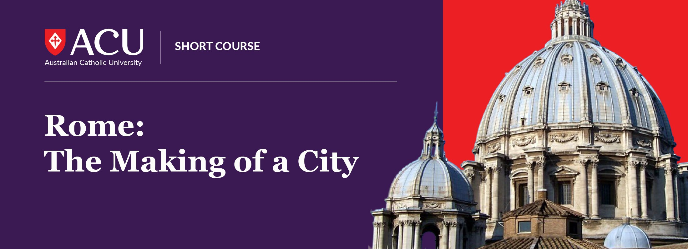

Welcome page

 Watch
Watch
Hello, and welcome to Rome: The Making of a City.
We are delighted to take this journey with you through time and across one of the world’s most significant cities, guided by the expertise of ACU’s humanities scholars, with experience teaching on the ACU Rome campus.
This non-award course is intended as an introduction to the rich history of the city of Rome, for anyone with a passion for the past. Discover key events, buildings, artefacts and texts that connect the city’s past to the present and the individuals who have shaped its story.
Rome has a long and complex history as an international city, and it has been built by the activities of people from near and far. The world has long come to Rome. It’s a city that was not simply created in one era but many, and it has been shaped by diverse people, rich and poor, free and enslaved, migrants and travellers, poets, and artists, and the everyday inhabitants who have lived and worked here for centuries.
In this course, we’ll introduce you to some of the key individuals, places and artworks that made it the city we find today. We’ll listen to their stories, hear their poetry, view the art that they made to understand the city they lived in, and discover how they wrote its history in text and in stone. We’ll keep you located in the modern city and focus on sites and artefacts that you can still visit, whether from your armchair or in person.
The short course is designed as about 8 hours of learning in total. Each module should take about an hour to explore and each ends with a multiple-choice quiz where you can consolidate your learning.
We recommend following the modules in sequence, taking time to engage with the videos, audio discussion and readings as you go. You can revisit the materials whenever you wish.
Take your time. This course is for you to enjoy. It is self-paced and there are many opportunities to explore areas of your interest with further reading options.
I hope you enjoy the course!
Hello and welcome to Rome: The Making of a City.
We are delighted to take this journey with you through time and across one of the world’s most significant cities, guided by the expertise of ACU’s humanities scholars, with experience teaching on the ACU Rome campus.
This non-award course is intended as an introduction to the rich history of the city of Rome, for anyone with a passion for the past. Discover key events, buildings, artefacts and texts that connect the city’s past to the present and the individuals who have shaped its story.
Rome has a long and complex history as an international city, and it has been built by the activities of people from near and far. The world has long come to Rome. It’s a city that was not simply created in one era but many, and it has been shaped by diverse people, rich and poor, free and enslaved, migrants and travellers, poets, and artists, and the everyday inhabitants who have lived and worked here for centuries.
In this course, we’ll introduce you to some of the key individuals, places and artworks that made it the city we find today. We’ll listen to their stories, hear their poetry, view the art that they made to understand the city they lived in, and discover how they wrote its history in text and in stone.
We’ll keep you located in the modern city and focus on sites and artefacts that you can still visit, whether from your armchair or in person.
We look forward to travelling in time and across the city with you, as we discover the story of Rome.